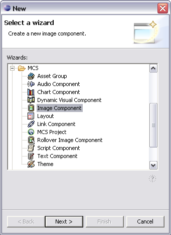

In MCS you can choose a wizard to create a new project or add a new components, layouts or themes to an existing project.
You can customize Eclipse to use shortcuts with the MCS perspective, and choose File | New or right click on a policy folder to choose a component from those listed in the context menu. From any other perspective choose File | New | Other, select MCS in the wizard tree, and then choose the wizard you need.

Note: Although you can continue with the wizard when the Next button is enabled, you may want to stop between pages. To do so you can click Finish when the button is enabled and edit other values later.
Related topics
Creating a project
Adding a component
Adding a layout
Adding a theme
Using the MCS perspective